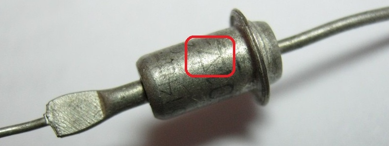
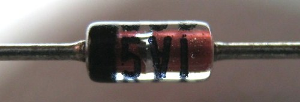
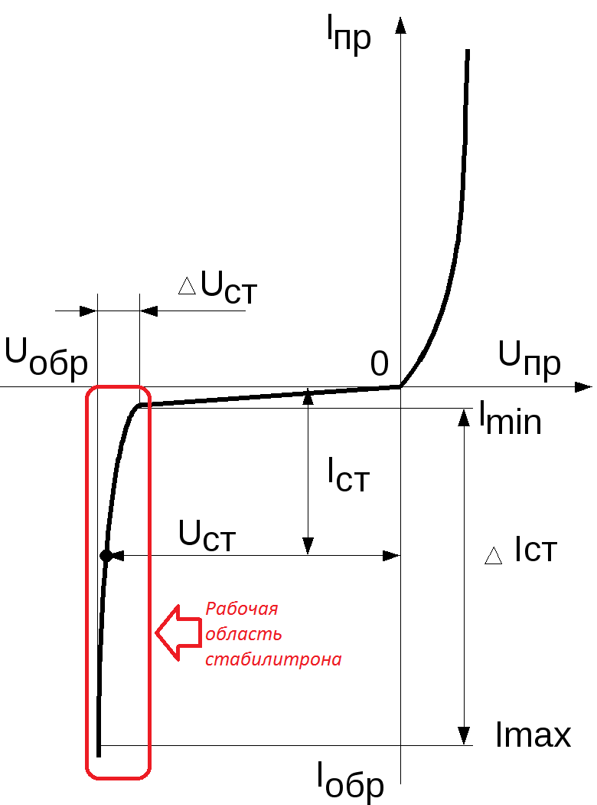
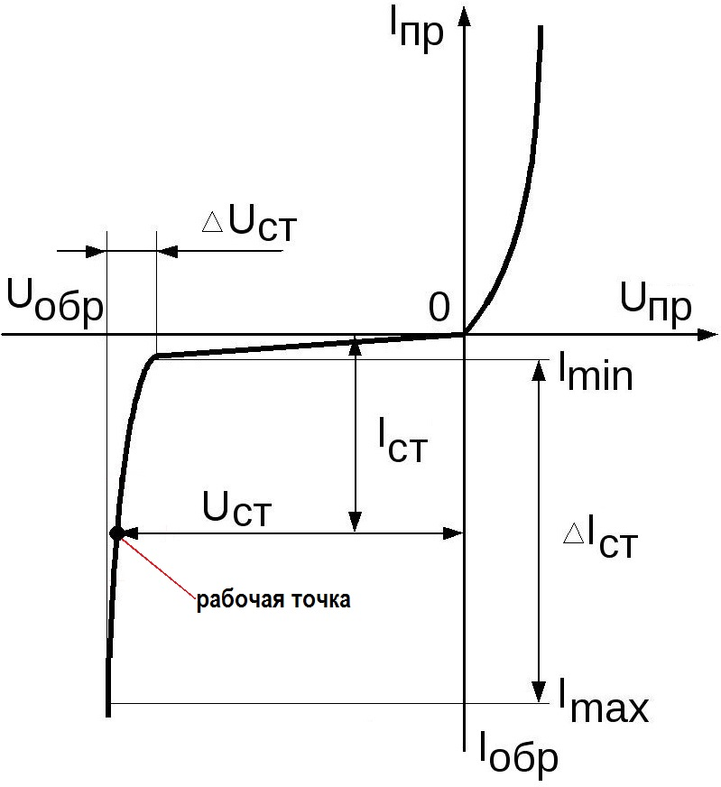
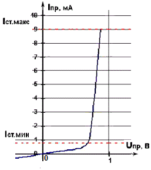
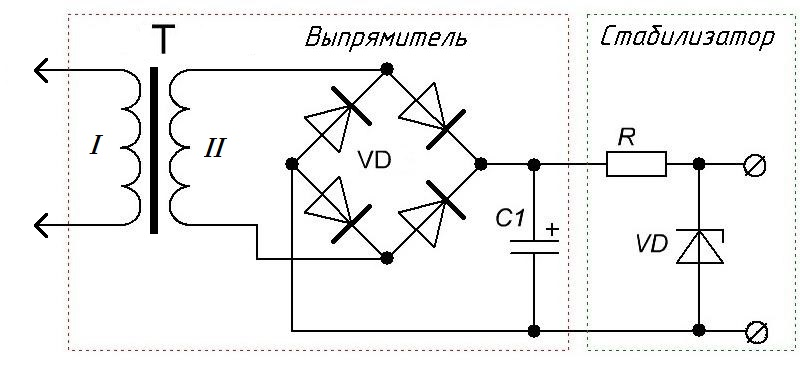

Стабилитроны и стабисторы
Стабилитроны и стабисторы — это полупроводниковые диоды, предназначенные для стабилизации, т. е. поддержания постоянства напряжения в цепях питания радиоэлектронной аппаратуры.
Конструкции стабилитронов широкого применения аналогичны выпрямительным диодам (рис. 1 и 2).

Рис. 1 - Стабилитрон Д814В.
На корпусе иммется схематическое обозначение диода, указывающее, где находятся катод и анод.

Рис. 2 - Зарубежный стабилитрон.
Надпись
5V1 - напряжение стабилизации данного стабилитрона составляет 5,1 В.
Катод помечается в основном черной полоской
Работает стабилитрон не на прямой, как выпрямительные или высокочастотные диоды, а на участке обратной ветви вольтамперной характеристики, где незначительное обратное напряжение вызывает значительное увеличение обратного тока через прибор. Разобраться в сущности действия стабилитрона поможет его вольтамперная характеристика (рис. 3).

Рис. 3 - Вольтамперная характеристика стабилитрона
Напряжение на стабилитрон подают в обратной полярности, т. е. включают так, чтобы его анод был соединен с минусом, а катод с плюсом источника питания. При таком включении через стабилитрон течет обратный ток Iобр. По мере увеличения обратного напряжения обратный ток растет очень мало — характеристика идет почти параллельно оси Uобр. Но при некотором напряжении Uобр p-n-переход стабилитрона пробивается и через него начинает течь значительный обратный ток. Теперь вольт-амперная характеристика резко поворачивает и идет вниз почти параллельно оси Iобр. Этот участок и является для стабилитрона рабочим. Пробой не может больше наращивать на себе напряжение, и в это время начинается возрастать сила тока в стабилитроне. Самое главное - не переборщить силу тока, больше чем Imax, иначе стабилитрон выходит из строя. Пробой p-n-перехода не ведет к порче прибора, если ток через него не превышает некоторой допустимой величины.
Так как стабилитрон работает именно в обратной полярности, в отличие от диода (стабилитрон подключают катодом к плюсу, а диод катодом к минусу), то и рабочая область будет именно та, что отмечена красным прямоугольником.
Самым лучшим рабочим режимом стабилитрончика считается режим, при котором сила тока на стабилитроне находится где-то в середине между максимальным и минимальным его значением. На графике это и будет рабочей точкой рабочего режима стабилитрона (рис. 4).

Рис. 4 - Рабочая точка стабилитрона
Стабистор, как и выпрямительный диод, работает на прямой ветви вольтамперной характеристики (рис. 5).

Рис. 5 - Вольтамперная характеристика стабистора
Стабистор открывается при незначительном прямом напряжении Uпр и через него начинает течь нарастающий по величине прямой ток Iпр. Прямая ветвь вольт-амперной характеристики стабистора проходит почти параллельно оси Iпр. При значительном изменении прямого тока через стабистор падение напряжения на нем изменяется очень мало. Это свойство стабистора и используется для стабилизации напряжения.
Параметры стабилитронов
Наиболее важные параметры (характеристики) стабилитронов и стабисторов:
- номинальное напряжение стабилизации Uст - падение напряжения, которое создается между выводами стабилизатора или стабистора в рабочем режиме.
- номинальныйток стабилизации Iст,
- минимальный ток стабилизации Iст.мин - для стабилитрона — наименьший ток через прибор, при котором начинается устойчивая работа в режиме «пробоя» (на рис.1 — линия Iст.мин); для стабистора - наименьший прямой ток, при котором крутизна вольт-амперной характеристики резко уменьшается (на рис.2 — на уровне линии Iст.мин). С уменьшением этого тока приборы перестают стабилизировать напряжение.
- максимальный ток стабилизации Iст.макс - это наибольший ток через прибор, при котором температура его р-n-перехода не превышает допустимой (на рис. 1 и 2 — линии Iст.макс). Превышение тока Iст.макс ведет к тепловому пробою р-n перехода и, естественно, к выходу прибора из строя.
Номинальный - это значит нормальный параметр, при котором возможна долгосрочная работа радиоэлемента.
Использование стабилитронов
Стабилитроны часто используются стабилизации выходного напряжения источника питания (рис. 6).

Рис. 6 - Схема простого источника питания
Слева - выпрямитель, с помощью которого получаем постоянное напряжение из переменного. Справа - стабилизатор.
Источники:
hamlab.net - Стабилизаторы напряжения